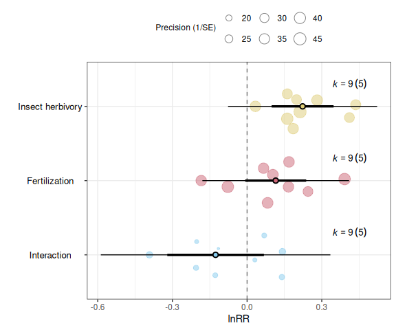

Helper functions for conducting meta-analyses of interactions in 2×2 factorial experiments.
Installation
You can install the development version of minter from GitHub:
devtools::install_github("fdecunta/minter", force = TRUE)Example
Effect Sizes For Factorial Meta-Analysis
The function factorial_effsize() computes five effect sizes from the data of a factorial experiment:
-
Two simple effects:
- The effect of Factor A relative to the Control
- The effect of Factor B relative to the Control
- The effect of Factor A relative to the Control
-
Two overall effects:
- The overall effect of Factor A across levels of Factor B
- The overall effect of Factor B across levels of Factor A
- The overall effect of Factor A across levels of Factor B
-
One interaction effect:
- The effect size of the interaction between Factors A and B
library(minter)
# Load fake data from a 2-by-2 factorial experiment:
# - Insect herbivory (Herb)
# - Fertilization (Fert)
data(fake_data)
fake_data <- factorial_effsize(
effsize = "lnrr",
colnames = c("Herb", "Fert"),
data = fake_data,
Ctrl_mean = C_mean,
Ctrl_sd = C_sd,
Ctrl_n = C_n,
A_mean = Herb_mean,
A_sd = Herb_sd,
A_n = Herb_n,
B_mean = Fert_mean,
B_sd = Fert_sd,
B_n = Fert_n,
AB_mean = HxF_mean,
AB_sd = HxF_sd,
AB_n = HxF_n
)
str(fake_data)
#> 'data.frame': 9 obs. of 24 variables:
#> $ Study : chr "Study_1" "Study_1" "Study_2" "Study_3" ...
#> $ C_mean : num 8.46 8.75 8.2 11.33 10.6 ...
#> $ C_sd : num 1.48 1.27 1.56 1.91 1.9 ...
#> $ C_n : int 23 26 23 20 27 23 28 27 25
#> $ Herb_mean : num 10.9 10.1 10.7 12.9 13.1 ...
#> $ Herb_sd : num 1.4 1.48 1.56 1.7 1.92 ...
#> $ Herb_n : int 27 29 23 24 26 20 27 27 29
#> $ Fert_mean : num 9.7 11.47 11.16 9.08 10.86 ...
#> $ Fert_sd : num 1.02 1.5 1.87 1.01 1.07 ...
#> $ Fert_n : int 30 30 28 23 29 26 28 26 29
#> $ HxF_mean : num 11 10.8 12.9 11.1 15.4 ...
#> $ HxF_sd : num 1.63 1.48 1.16 1.01 1.45 ...
#> $ HxF_n : int 28 23 25 21 20 24 28 23 22
#> $ EffectSize_ID : int 1 2 3 4 5 6 7 8 9
#> $ Herb_simple_lnRR : num 0.251 0.145 0.263 0.13 0.208 ...
#> $ Herb_simple_lnRR_var : num 0.00194 0.00154 0.00251 0.00215 0.00202 ...
#> $ Fert_simple_lnRR : num 0.136 0.271 0.308 -0.2216 0.0239 ...
#> $ Fert_simple_lnRR_var : num 0.0017 0.00138 0.00259 0.00196 0.00153 ...
#> $ Herb_overall_lnRR : num 0.1852 0.0334 0.1987 0.1615 0.2813 ...
#> $ Herb_overall_lnRR_var: num 0.000744 0.000725 0.000904 0.000839 0.000682 ...
#> $ Fert_overall_lnRR : num 0.066 0.166 0.245 -0.184 0.103 ...
#> $ Fert_overall_lnRR_var: num 0.000751 0.000729 0.000904 0.000744 0.000703 ...
#> $ Herb_x_Fert_lnRR : num -0.128 -0.2051 -0.1153 0.0688 0.1398 ...
#> $ Herb_x_Fert_lnRR_var : num 0.0031 0.00293 0.00384 0.00308 0.0028 ...Multiple VCVs For Non-Independence
Effect sizes are often not independent. In such cases, it is useful to use an estimated variance-covariance matrix to account for the non-independence among sampling variances.
For multiple effect sizes you need multiple matrices. The function factorial_vcv() helps to calculate all of them at once:
vi_cols <- c(
"Herb_simple_lnRR_var",
"Fert_simple_lnRR_var",
"Herb_overall_lnRR_var",
"Fert_overall_lnRR_var",
"Herb_x_Fert_lnRR_var"
)
VCVs <- factorial_vcv(
vi_cols = vi_cols,
cluster = Study,
obs = EffectSize_ID,
rho = 0.5,
data = fake_data
)
str(VCVs)
#> List of 5
#> $ Herb_simple_lnRR_var : num [1:9, 1:9] 0.001941 0.000865 0 0 0 ...
#> $ Fert_simple_lnRR_var : num [1:9, 1:9] 0.001701 0.000765 0 0 0 ...
#> $ Herb_overall_lnRR_var: num [1:9, 1:9] 0.000744 0.000367 0 0 0 ...
#> $ Fert_overall_lnRR_var: num [1:9, 1:9] 0.000751 0.00037 0 0 0 ...
#> $ Herb_x_Fert_lnRR_var : num [1:9, 1:9] 0.0031 0.00151 0 0 0 ...To use a specific variance-covariance matrix, just reference it using ‘$’:
# Overall effect of Insect Herbivores
res_herb <- metafor::rma.mv(
yi = Herb_overall_lnRR,
V = VCVs$Herb_overall_lnRR_var,
random = ~ 1 | Study,
test = "t",
data = fake_data)
# Overall effect of Fertilization
res_fert <- metafor::rma.mv(
yi = Fert_overall_lnRR,
V = VCVs$Fert_overall_lnRR_var,
random = ~ 1 | Study,
test = "t",
data = fake_data)
# Interaction effect
res_intr <- metafor::rma.mv(
yi = Herb_x_Fert_lnRR,
V = VCVs$Herb_x_Fert_lnRR_var,
random = ~ 1 | Study,
test = "t",
data = fake_data)Aggregate Model Results and Visualize
To visualize the results of multiple modles you need to aggregate them. factorial_mod_results() do this:
models <- list(
"Insect herbivory" = res_herb,
"Fertilization" = res_fert,
"Interaction" = res_intr
)
res_table <- factorial_mod_results(
models = models,
group = "Study"
)
res_table
#> name estimate lowerCL upperCL lowerPR upperPR
#> 1 Interaction -0.1265575 -0.320658852 0.06754378 -0.58768793 0.3345729
#> 2 Fertilization 0.1149527 -0.007502029 0.23740741 -0.17970732 0.4096127
#> 3 Insect herbivory 0.2229779 0.098505410 0.34745043 -0.07655605 0.5225119You may want to visualize these results, and the orchaRd package provides excellent tools for this. To support this, minter is designed to work seamlessly with orchaRd.
The function factorial_mod_results() returns an object of class orchaRd, which can be used directly with orchaRd::orchard_plot():
orchaRd::orchard_plot(
res_table,
group = "Study",
xlab = "lnRR",
legend.pos = "top.out",
angle = 0
)